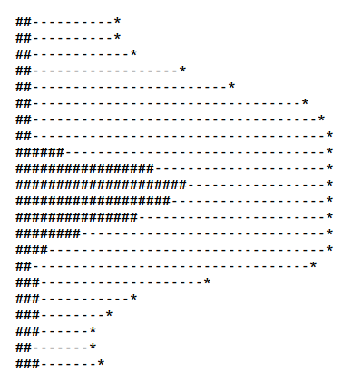
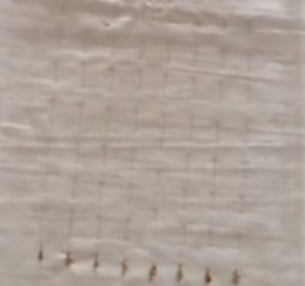
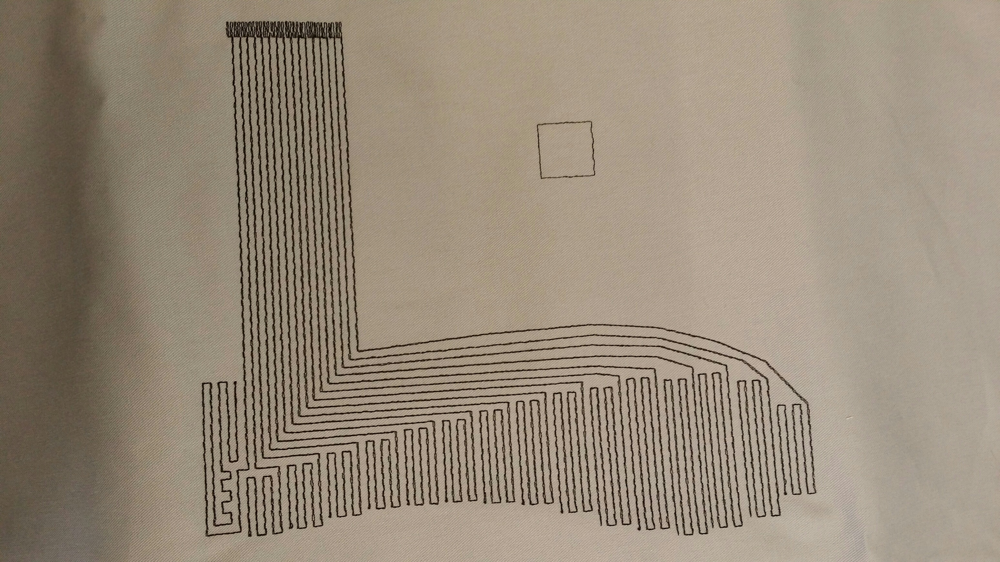
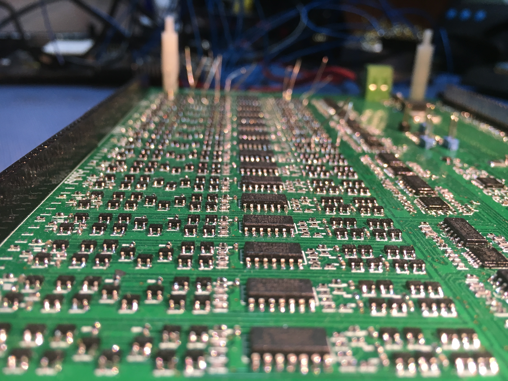
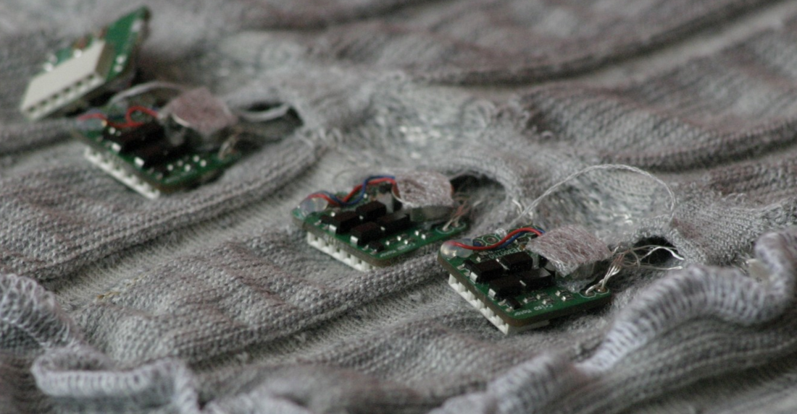
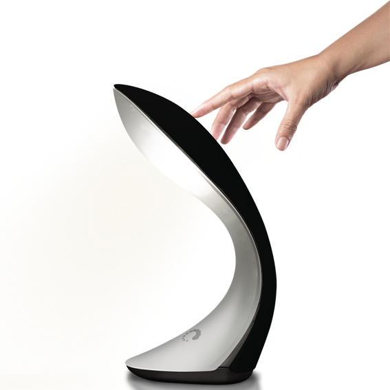
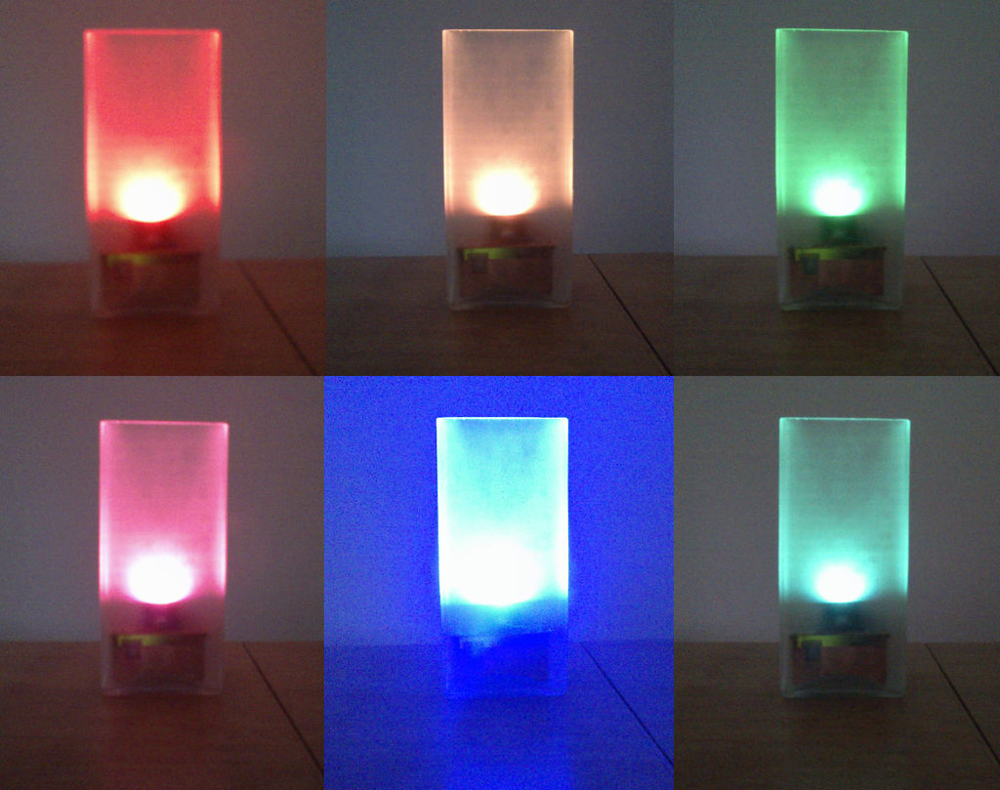

Welcome!
Ever after Stephan Wensveen introduced him to the cultural clash of electronics and textiles somewhere in 2011, Admar became more and more fascinated to find new methods and technologies that use the best of both worlds. This website is a short overview of some of his projects in this area.
Have a look around and thanks for dropping by!
Pressure and presence sensing in textile

As part of their work at Eindhoven University of Technology, Admar Schoonen and Troy Nachtigall regularly give workshops on presence and pressure sensing in textile. Students will learn the basic principles behind a simple textile sensor that can be used simultaneously for both sensing pressure (resistive sensing) and presence of a finger or a hand (capacitive sensing).
This allows for rich interactions with pleasant user feedback from the sensor deformation when in pressure sensing mode as well as feedback for pre-interaction when the device is aware that you are approaching it in capacitice sensing mode.
The latest version also includes a method to make the sensor only sensitive from one side, so it can be used in clothing without unintentionally triggering the capacitive sensor when moving.
Want to learn more? Here you will find all the material and source code!
Multi-touch textile

When one or a few touch sensors from the pressure and presence sensor above are not enough, then here is the capacitive multi-touch textile sensor!
Since 2012, Admar is working on giving textile multi-touch functionality. After many failed attempts, a first successful prototype saw the light of day in 2013.
Click here to see it for yourself.
Source code has not yet been released, but will probably end up here someday.
Pressure sensitive shoe

A recent work in progress is to adapt the multi-touch textile for pressure sensing inside a shoe. This work is done in collaboration with Troy Nachtigall and Lucia van den Hoven.
A sneek peek of a part of the sensor is shown on the left.
Multi-touch textile, v2

While the multi-touch textile from 2013 is very nice, it has its limitations. Since 2014 Admar is working on an improved version that is suitable for larger surfaces with higher update rates and higher resolution.It is in active development, but a sneek preview of some of the electronics can be seen on the left.
CRISP modules

For the CRISP project, Admar worked closely together with Martijn ten Böhmer to create small Arduino compatible modules that can be used in e-textile projects.
There were individual modules for each of the following modalities:
- Light (RGB + white)
- Vibration (motor driver)
- Sound (containing a small speaker)
- Temperature (driver for resistive loads)
- Wireless communication (BLE communication with smart phone)
Besides that, each module could individually be addressed and contained analog and digital IO and could use capacitive touch input.
While each module could work standalone, the modules contained generic software such that for many projects, only the master module (containing BLE) has to be reprogrammed, saving considerable development and debug time.
See Martijns website for some of the projects that can be made with these modules.
Fonckel

When working at Metatronics, Admar designed and implemented the algorithm for capacitive touch in the Fonckel One multi-touch lamp, starting with raw touch values up to high level gesture interpretation and light output.Most interesting aspect: working closely with the original designer Philip Ross to explore and fine-tune the behavior of the lamp.
See a video to get an impression of the lamp.
Luminch Color

Not satisfied by the monochromatic light of the Fonckel lamp, Admar hacked an Ikea Gröno lamp into a simple RGB lamp to set a mood in his living room. While the lamp has ordinary red, green, blue and white inputs and a separate input for intensity, the actual color space of the lamp is not RGB or RGBW but something very similar to CIELab. This color space decouples intensity, color and saturation and allows a much more uniform user-experience when adjusting the color compared to ordinary RGB, RGBW or HSV input models.Most interesting aspect: learning about human vision and implementing color space conversions.
Want to have one? Build it yourself! The instructions and photos are not very detailed but if you are a little experienced in electronics and software programming you will probably figure it out.
About Me
Admar Schoonen is an embedded software architect that loves crossing boundaries and fusing different domains. He studied electrical engineering in Eindhoven and worked on models and signal processing algorithms for RF electronics, where he came to love algorithm design and mathematics.
Since good algorithm design requires at least some understanding of software design and the (in)capabilities of processors, he got into embedded software design at a small company named Metatronics. It is there that he became fascinated with capacitive touch, industrial design and e-textiles.
Since then, Admar has worked with several designers to explore user - product interactions and works as coach at Eindhoven University of Technology. Admar currently works at Prodrive Technologies but is also becoming more and more intersted in industrial design and especially in how seemingly subtle technical changes can influence user - product interactions and the overall user experience.
He still loves to work with e-textiles and capacitive touch and to collaborate with designers and students. He is by no means a designer, but loves to work with designers to explore this area.
Interested in working together? Please let me know!
Get In Touch
If you want to know more about his projects, have a question or could use a little help with your own project, please get in touch.